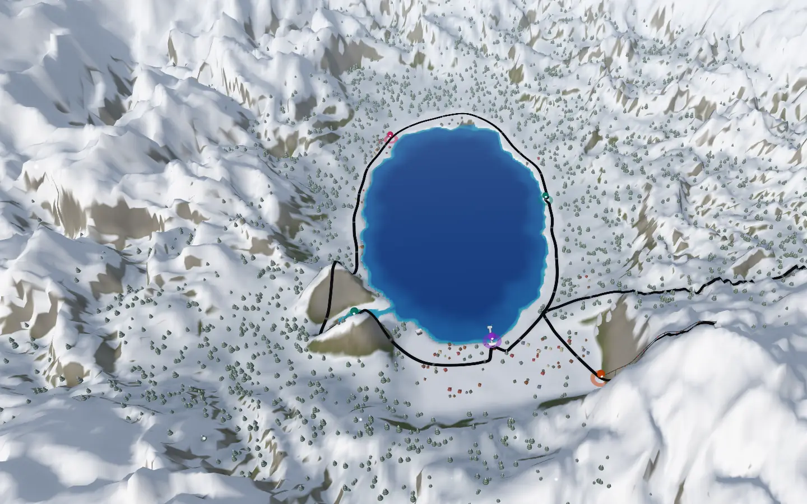
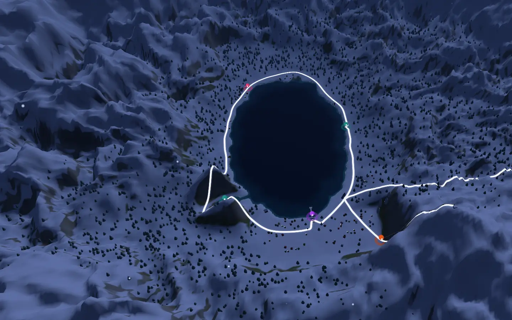

Recommended
A · One continuous fly-through
The guidebook’s map rises into Lake Tahoe and one camera flies the story: the shared trip draws itself around the lake, the fork branches at the cabin and a car drives it, the plan’s widgets stamp into the world while it snows, the sun sets on the pier, postcards fly to the next family.
- JavaScript
- 164 KB gzip
- Phone, CPU 4×, GPU
- 59.8 fps · p95 16.8 ms
- Phone, CPU 4×, software GL
- 15.6 fps · p95 133.3 ms